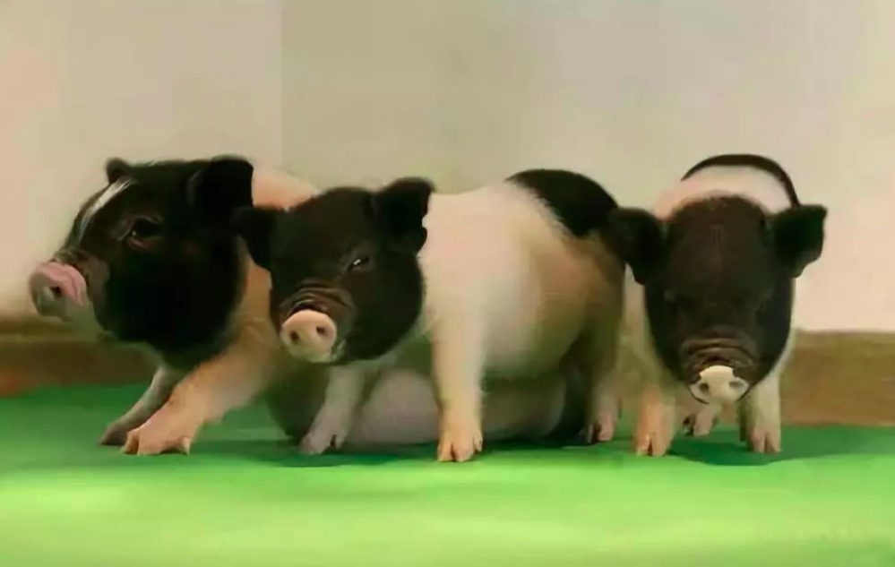

科学养猪的真正奥义，培养拯救人类的医学英雄
而在上万年的驯养过程中，猪成为与人类非常相似的一种动物。
科学家也果断抛弃了各种负面的猪设，将它视为一种理想的实验动物。
像“模式猪”就顺利出道了，并很快拥有重要的科研地位。
顾名思义，“模式猪”就是指用猪构建模拟人类疾病的模型。
我们常听到的经典模式动物是鼠、果蝇、斑马鱼。
可由于它们与人类进化距离相差较远等原因，并不能完全模仿人类疾病的发生过程。
但猪就不一样，它与人类的亲缘更近，有着与人类接近的解剖结构和生理功能等。
尤其是在消化系统、心血管系统、代谢过程等方面十分相似。所以，拿猪作研究模型的科研价值是非常大的。
但你可能会疑惑，猪动不动就能长到几百斤。这体型研究不是特别费劲吗？
这倒不必担心，“模式猪”会选取成年体重在30公斤左右的小型猪来当实验品种。
它们拥有体型小、遗传稳定、易饲养、便于操作等特点。
同时还满足遗传稳定、个体间各项生理指标差异小等实验要求。

在我国利用基因工程技术建立了人多囊肾病、侏儒症、亨廷顿舞蹈症等十多种模式猪。
此外，人们还会以猪的器官为原料来提取许多药物。
如今临床医学上就有从猪心脏中提取的苹果酸脱氢酶、胸腺素肽、肌球蛋白等。
还有从猪肝脏中提取的肝素、猪肝酯酶、卵磷脂等。说不定，你正在吃的药里面就含有从猪身上提取出来的成分。